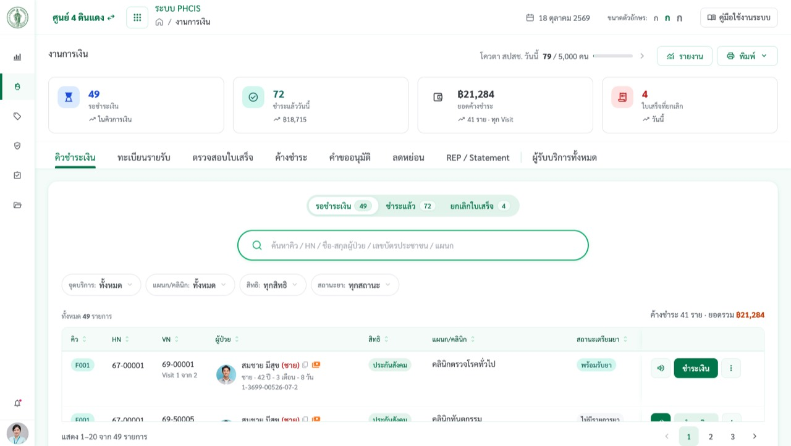

1. ภาพรวมคิวชำระเงิน
- ชี้การ์ดสรุป 4 ใบ: รอชำระเงิน · ชำระแล้ววันนี้ · ยอดค้างชำระ (N ราย · ทุก Visit) · ใบเสร็จที่ยกเลิก
- ชี้แท็บบน 8 แท็บ แล้วอยู่ที่ คิวชำระเงิน › รอชำระเงิน
- ชี้ตัวกรอง จุดบริการ: (ทั่วไป · ทำแผล · ฉีดยา · งานบำบัดยาเสพติด)
- ชี้แถว F001 สองแถว: "Visit 1 จาก 2" และ "Visit 2 จาก 2" ใต้ VN
- ชี้ไอคอนเงินสีส้มหลังชื่อ + "ค้างเก่า 3 ครั้ง · 495" + ปุ่ม ดูรายการค้างชำระ
- ชี้แถว F004: ปุ่ม ชำระเงิน มีกุญแจ → ชี้เมาส์ค้างให้เห็นชื่อผู้ที่เปิดบิลอยู่
- กด ⋮ ของแถวใดก็ได้ ให้เห็นเมนู: ขอลดหย่อน · ดูประวัติการขอลดหย่อน · ดูรายการค้างชำระ · ยกเลิกคิว
พูดว่าคลินิกตรวจโรคทั่วไป เบาหวาน ความดัน ใช้ Visit เดียวกัน คลินิกอื่นแยก Visit และ 1 Visit = 1 บิล · ยอดค้างชำระแจ้งเตือนทุกจุดแต่ไม่บล็อกการรับบริการ · บิลที่คนอื่นเปิดอยู่จะถูกล็อกกันรับเงินซ้ำ
